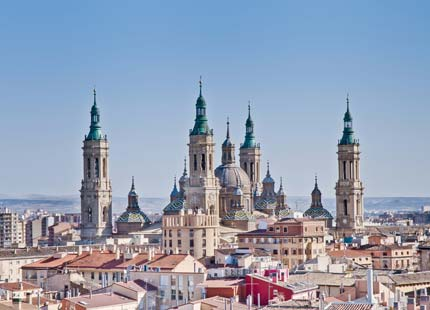

1- Barcelona
Barcelona es una ciudad española, capital de la comunidad autónoma de Cataluña, de la provincia homónima y de la comarca del Barcelonés.
Con una población de 1 636 762 habitantes en 2019, es la segunda ciudad más poblada de España y de la península ibérica después de Madrid, y la décima de la Unión Europea. El área metropolitana de Barcelona tiene 3 291 654 (2019), y el ámbito metropolitano de Barcelona, cuenta con 4 895 876 habitantes (2019), siendo así la quinta ciudad de mayor población de la Unión Europea.
La ciudad cuenta con un PIB nominal de 142 223 millones USD y un PIB per cápita nominal de 30 619 USD, lo que representa un PIB PPA per cápita de 36 240 USD, siendo la segunda área metropolitana española en actividad económica; y la décimoseptima de Europa por detrás de: Londres, París, Rin-Ruhr, Ámsterdam, Milán, Bruselas, Moscú, Fráncfort del Meno, Múnich, Madrid, Berlín, Viena, Roma, Copenhague, Estocolmo, Birmingham.
Se ubica a la orilla del mar Mediterráneo, a unos 120 km al sur de la cadena montañosa de los Pirineos y de la frontera con Francia, en un pequeño llano litoral limitado por el mar al este, la sierra de Collserola al oeste, el río Llobregat al sur y el río Besós al norte. Por haber sido capital del condado de Barcelona, se suele aludir a ella con la denominación antonomástica de Ciudad Condal.
La historia de Barcelona se extiende a lo largo de 4000 años, desde finales del Neolítico, con los primeros restos hallados en el territorio de la ciudad, hasta la actualidad. El sustrato de sus habitantes aúna a los pueblos íberos, romanos, judíos, visigodos, musulmanes y cristianos. Como capital de Cataluña y segunda ciudad en importancia de España, la Ciudad Condal ha forjado su relevancia con el tiempo, desde ser una pequeña colonia romana hasta convertirse en una ciudad valorada internacionalmente por aspectos como su economía, su patrimonio artístico, su cultura, su deporte y su vida social.
Barcelona ha sido escenario de diversos acontecimientos internacionales que han contribuido a consolidarla, desarrollarla y darle proyección mundial. Los más relevantes han sido la Exposición Universal de 1888, la Exposición Internacional de 1929, los Juegos Olímpicos de 1992 y el Fórum Universal de las Culturas 2004. Es también sede del secretariado de la Unión para el Mediterráneo.
En la actualidad, Barcelona está reconocida como una ciudad global por su importancia cultural, financiera, comercial y turística. Tiene uno de los puertos más importantes del Mediterráneo y es también un importante punto de comunicaciones entre España y Francia, debido a las conexiones por autopista y alta velocidad ferroviaria. El Aeropuerto Josep Tarradellas Barcelona-El Prat, situado a 15 km del centro de la ciudad, fue utilizado por más de 52,6 millones de pasajeros en 2019.

2- Madrid
Madrid es un municipio y una ciudad de España. La localidad, con categoría histórica de villa,9 es la capital del Estado y de la Comunidad de Madrid. Dentro del término municipal de Madrid, el más poblado de España, viven 3 266 126 personas empadronadas, según el INE de 2019. El área metropolitana asociada tiene una población de 6 507 184 habitantes, por lo que es la segunda de la Unión Europea, según la fuente, tras la de París, y en algunas fuentes detrás también de la Región del Ruhr, así como la segunda ciudad más poblada de la Unión Europea, solo por detrás de Berlín.
La ciudad cuenta con un PIB nominal de 230 018 millones de euros y un PIB per cápita nominal de 34 916 € (40 720 US$), siendo la 1.ª área metropolitana española en actividad económica; y la décima de Europa tras Londres, París, Rin-Ruhr, Ámsterdam, Milán, Bruselas, Moscú, Fráncfort del Meno y Múnich. Madrid es también la ciudad española con más pernoctaciones hoteleras.
En calidad de capital de España, Madrid alberga las sedes del Gobierno de España y sus Ministerios, de las Cortes Generales (Congreso y Senado), del Tribunal Supremo y del Tribunal Constitucional, así como la residencia oficial de los reyes de España y del presidente del Gobierno. En el plano económico, es la cuarta ciudad más rica de Europa, tras Londres, París y Moscú.18 Para 2009, el 50,1 % de los ingresos de las 5000 principales empresas españolas son generados por sociedades con sede social en Madrid, que suponen un 31,8 % de ellas. Es sede del 4.ª mayor mercado de valores de Europa, y 2.ª en el ámbito iberoamericano (Latibex) y de varias de las más grandes corporaciones del mundo. Es la 8.ª ciudad del mundo con mayor presencia de multinacionales, tras Pekín y Milán y por delante de Dubái, París y Nueva York.
En el plano internacional acoge la sede central de la Organización Mundial del Turismo (OMT), perteneciente a la ONU, la sede de la Organización Internacional de Comisiones de Valores (OICV), la sede de la Secretaría General Iberoamericana (SEGIB), la sede de la Organización de Estados Iberoamericanos para la Educación, la Ciencia y la Cultura (OEI), la Organismo Internacional de Juventud para Iberoamérica (OIJ), y la sede de Public Interest Oversight Board (PIOB). También alberga las principales instituciones internacionales reguladoras y difusoras del idioma español: la Comisión Permanente de la Asociación de Academias de la Lengua Española, y sedes centrales de la Real Academia Española (RAE), del Instituto Cervantes y de la Fundación del Español Urgente (Fundeu). Madrid organiza ferias como FITUR, Madrid Fusión, ARCO, SIMO TCI, el Salón del Automóvil y la Cibeles Madrid Fashion Week.
Es un influyente centro cultural y cuenta con museos de referencia internacional, entre los que destacan el Museo del Prado, el Museo Nacional Centro de Arte Reina Sofía, el Thyssen-Bornemisza y CaixaForum Madrid, que ocupan, respectivamente, el 14.º, 10.º, 67.º y 79.º puesto entre los museos más visitados del mundo. El Museo del Prado se considera la mayor pinacoteca del mundo
Los orígenes de la ciudad son objeto de revisión histórica tras recientes hallazgos de enterramientos visigodos así como de restos que se remontan a los carpetanos o periodo prerromano. Las excavaciones arqueológicas también arrojan restos que se atribuyen al Madrid romano. Estos hallazgos de época visigoda han venido a confirmar que el posterior asentamiento fortificado musulmán de Maǧrīţ (del siglo ix) se había asentado sobre un vicus visigodo del siglo VII llamado Matrice o matriz (arroyo). No sería hasta el siglo xi cuando Madrid fue incorporada a la Corona de Castilla, tras su conquista por Alfonso VI de León en 1083. Fue designada como sede de la Corte por el rey Felipe II en 1561, convirtiéndose en la primera capital permanente de la monarquía española. La ciudad ha mantenido la capitalidad del país desde entonces, salvo por breves intervalos de tiempo.

3- Palma de Mallorca
Palma de Mallorca (oficialmente Palma) es una ciudad y municipio español, capital de la isla de Mallorca y de la comunidad autónoma de las Islas Baleares. Es además sede del partido judicial número tres de la provincia y de la diócesis de Mallorca. Está ubicada en la parte occidental del mar Mediterráneo y, dentro de la isla, hacia el suroeste. Se encuentra a unos 250 km al este de la península ibérica.
Su término municipal ocupa una extensión de 208,63 km² que se extienden entre la sierra de Na Burguesa y el Prado de Sant Jordi. La ciudad está situada en el centro de la bahía de Palma, a unos 13 metros de altura sobre el nivel del mar. Varios torrentes, como la Riera o Gros, la atraviesan.
Con 416 065 habitantes (datos oficiales a 1 de enero de 2019), Palma es la octava mayor ciudad de España por población y la primera de las Islas Baleares. Además, su área metropolitana engloba nueve localidades que alcanzan los 560 240 habitantes repartidos en una superficie de 1015,88 km², siendo la 14.ª de España.
Fue fundada con el nombre de Palma por el cónsul romano Quinto Cecilio Metelo Baleárico en el año 123 a. C. Se estima que su asentamiento actual corresponde posiblemente con las ruinas romanas que se encuentran bajo su casco histórico, aunque aún no existen pruebas irrefutables. Luego de otras conquistas por parte de los vándalos y por los árabes en 903, fue finalmente conquistada por el rey Jaime I de Aragón el 31 de diciembre de 1229, convirtiéndose en la próspera Ciutat de Mallorca capital de su propio reino, que decayó tras su incorporación a la Corona de Aragón en 1279.
En 1715 entraron en vigor los Decretos de Nueva Planta, recuperando la ciudad su topónimo romano, Palma. Poco después, ya en el siglo xx, fue protagonista de la explosión de un intenso auge turístico que la usó como destino vacacional durante las décadas de 1960 y 1970. En la actualidad constituye un notable centro económico y cultural a nivel insular y autonómico.
4- Sevilla
Sevilla es un municipio y una ciudad de España, capital de la provincia homónima y de Andalucía. Cuenta con 688 811 habitantes en 2018, por lo que es la ciudad más poblada de Andalucía, la cuarta de España después de Madrid, Barcelona y Valencia y la 32.ª de la Unión Europea. El municipio tiene una superficie de 140,8 km².8 El área metropolitana de Sevilla está compuesta por 46 municipios, incluye a una población de 1 535 379 habitantes (INE, 2016) y ocupa una superficie de 4905, km².
Su casco antiguo, con 3,9 km², es el más extenso de España y el sexto más grande de Europa, tras los de Roma (14,6 km²),11 Nápoles (10,3 km²),12 Venecia (7,6 km²),13 Florencia (5,5 km²), y Génova (4,1 km²). Sevilla es una de las ciudades con más monumentos catalogados en Europa. Su casco histórico es uno de los mayores de España (nótese la diferencia entre casco antiguo, que solo incluye la zona histórica anterior a la Revolución Industrial, y casco histórico, que abarca estadios posteriores). Su patrimonio histórico y monumental y sus diversos espacios escénicos y culturales la constituyen en ciudad receptora de turismo nacional e internacional: en efecto, se trata de la tercera capital de España por número de visitantes, tras Barcelona y Madrid. Entre sus monumentos más representativos se encuentran la catedral (que incluye la Giralda), el Alcázar, el Archivo de Indias y la Torre del Oro, los tres primeros de los cuales fueron declarados Patrimonio de la Humanidad por la Unesco de forma conjunta en 1987
El puerto de Sevilla, situado a unos 70 km del océano Atlántico, es el único puerto marítimo de España en una ciudad del interior, pues el río Guadalquivir es navegable desde su desembocadura en Sanlúcar de Barrameda hasta la capital hispalense, aunque el tamaño de los barcos que acceden a la ciudad está limitado por una esclusa con un calado máximo de 8,5 m y el puente de circunvalación del Centenario que limita el calado aéreo a 42 m. Sevilla dispone de una red desarrollada de transporte por carretera y ferrocarril, así como de un aeropuerto internacional. Es destacable la presencia histórica en la ciudad tanto de la industria aeronáutica como de la industria militar.
Con la celebración de la Exposición Iberoamericana de 1929, la ciudad experimentó un gran desarrollo urbanístico marcado por la creación de parques y la construcción de edificios proyectados para dicho acontecimiento, como el parque de María Luisa o la plaza de España. La Exposición Universal de 1992 dejó como legado en la ciudad una importante mejora de la infraestructura, principalmente en las comunicaciones terrestres y aeronáuticas, entre las que destaca el acceso ferroviario del AVE a la estación de Santa Justa. Asimismo, el área de la Expo de 1992 acoge las sedes del Parque Tecnológico Cartuja 93, de la Universidad de Sevilla y del parque temático y de ocio Isla Mágica. En 2014 se llevaron a cabo importantes proyectos en la ciudad, como la Torre Cajasol, el proyecto del Puerto Delicias o el Acuario Nuevo Mundo, algunos de ellos objeto de polémica debido a su posible impacto visual.
La Universidad de Sevilla, fundada en 1505, tiene más de 65 000 estudiantes. Asimismo, la Universidad Pablo de Olavide cuenta con más de 10 000 estudiantes. Son miles los estudiantes extranjeros que se matriculan en los programas Erasmus y cursos de español en la Universidad de Sevilla, que en 2006 fue una de las diez más visitadas de Europa junto con otras ocho universidades españolas. Sevilla ha despertado desde antiguo, y especialmente durante la época del Romanticismo, la inspiración de los artistas europeos, que ven en ella un lugar pintoresco y maravilloso. Tras los últimos estudios, se ha llegado a contar un total de 150 óperas ambientadas en esta ciudad, como Las bodas de Fígaro, Don Giovanni, El barbero de Sevilla, La fuerza del destino o Carmen.

5- Calvia
Palma de Mallorca (oficialmente Palma) es una ciudad y municipio español, capital de la isla de Mallorca y de la comunidad autónoma de las Islas Baleares. Es además sede del partido judicial número tres de la provincia y de la diócesis de Mallorca. Está ubicada en la parte occidental del mar Mediterráneo y, dentro de la isla, hacia el suroeste. Se encuentra a unos 250 km al este de la península ibérica.
Su término municipal ocupa una extensión de 208,63 km² que se extienden entre la sierra de Na Burguesa y el Prado de Sant Jordi. La ciudad está situada en el centro de la bahía de Palma, a unos 13 metros de altura sobre el nivel del mar. Varios torrentes, como la Riera o Gros, la atraviesan.
Con 416 065 habitantes (datos oficiales a 1 de enero de 2019), Palma es la octava mayor ciudad de España por población y la primera de las Islas Baleares. Además, su área metropolitana engloba nueve localidades que alcanzan los 560 240 habitantes repartidos en una superficie de 1015,88 km², siendo la 14.ª de España.
Fue fundada con el nombre de Palma por el cónsul romano Quinto Cecilio Metelo Baleárico en el año 123 a. C. Se estima que su asentamiento actual corresponde posiblemente con las ruinas romanas que se encuentran bajo su casco histórico, aunque aún no existen pruebas irrefutables. Luego de otras conquistas por parte de los vándalos y por los árabes en 903, fue finalmente conquistada por el rey Jaime I de Aragón el 31 de diciembre de 1229, convirtiéndose en la próspera Ciutat de Mallorca capital de su propio reino, que decayó tras su incorporación a la Corona de Aragón en 1279.
En 1715 entraron en vigor los Decretos de Nueva Planta, recuperando la ciudad su topónimo romano, Palma. Poco después, ya en el siglo xx, fue protagonista de la explosión de un intenso auge turístico que la usó como destino vacacional durante las décadas de 1960 y 1970. En la actualidad constituye un notable centro económico y cultural a nivel insular y autonómico.